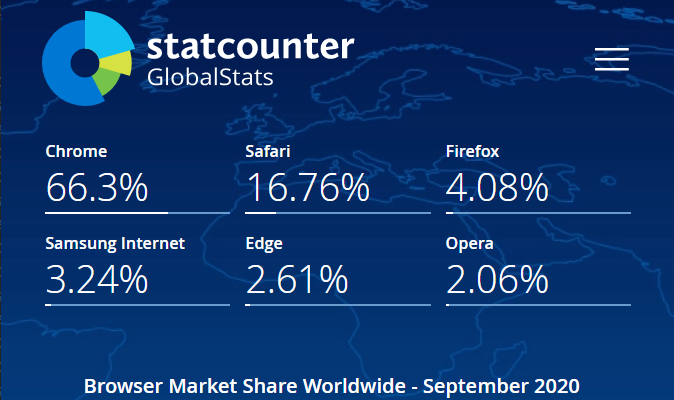

web engineering 101
about me

- Mathis Zeiher
- Software Engineer @SICK AG
- In the field for way too long...
All the slides are available here: https://mzeiher.github.io/webengineering/
pull requests are highly appreciated üòÄ @mzeiher/webengineering
what about you?
goals
Course Goals
professional expertise
Die Studierenden setzen die erarbeiteten Theorien und Modelle in Bezug zu ihren Erfahrungen aus der beruflichen Praxis und können deren Grenzen und praktische Anwendbarkeit einschätzen.
methodological expertise
Die Studierenden sind mit Abschluss des Moduls in der Lage, für weitgehend standardisierte Anwendungsfälle in der Praxis die angemessene Methode auszuwählen und anzuwenden. Sie kennen die Stärken und Schwächen der Methode in ihrem beruflichen Anwendungsfeld und können diese in konkreten Handlungssituationen gegeneinander abwägen
Social and personal experise
Die Studierenden können sowohl eigenständig, also auch im Team zielorientiert und nachhaltig handeln

- http://www.quickmeme.com/meme/3tnh3f
Overview of existing technologies in webengineering
Able to say "it depends..." and pick the tools which suit the best for the job
Able to look things up (no one expects from you that you know everything)
Wild ride through heaps of technologies
Fun while learning
Outlook to the future
whats not in the course
Fanboiism/Fangirlism
Thoughtleadership
Framework/Technology wars
disclaimer
Comments are highly subjective
Interesting people to follow
Interesting videos to watch
Interesting links to read
Interesting repositories
good resources
what?
introduction
Who is who (w3c, CSSWG, WHATWG, WICG, ES262, TC39 and others)
History of webengineering
Engines (blink, webkit, quantum (mozilla))
HTML
Basics
HTML5 syntax
Elements
ARIA
CSS
the CSS cascade, selectors and specificity
positioning
layout models (box model, inline/block, float, flex and grid)
containing blocks, block formatting context, stacking context
animations
media queries
DOM/CSSOM
Document Object Model, DOM manipulation, EventTarget, ShadowDom, Custom Elements
style attribute
CSS object model, Constructable StyleSheets
javascript
ES262 basics
Versions (es3, es5, es6, es2015-2019)
Module system (>=es6)
JS object model, functions, class and prototype inheritance, "this" (scope and lexical this) explained
javascript - advanced
functional and oo paradigm for programming
Arrays (map/reduce) Arrays and ArrayLike
Promises/async/await
Generator functions and iterators
Typescript/Flow/ReasonML
the javascript event loop explained (micro/macro task)
communication protocols
HTTP, HTTP/2, HTTP/3 (QUIC)
REST (GraphQL) (XMLHttpRequest, fetch)
CORS, security concepts
Websockets
WebRTC
what: backend technologies and stacks
Node (JS) (Apollo for GraphQL, epxress)
JavaEE (Spring Boot)
Go/Rust
PHP
Ruby
LAMP (Linux Apache MySQL PHP)
MEAN/MERN (mongoDB, express, angular, node)
backend technologies and stacks
Databases NoSQL, SQL, Document Stores, Big Table
"Serverless" Gatsby, Next, Zeit,
SSR (https://developers.google.com/web/updates/2019/02/rendering-on-the-web)
frameworks and libraries
General overview over the most popular frameworks, how they work and differences
(p)react (class based and hooks (also how they work ;))
Angular
vue3, svelte, Stencil
lit-html/hyper-html/lighter-html
security and authentication
OWASP
XSS, Injection, secure store
CORS, CSP
OAuth/OpenID, JWT, HTTP Basic, HTTP Digest, Cookies
modern js tool chain
modern javascript development needs its own tool chain to organize small and large projects, enabling shiping the best bundle for customers and increase developer experience
debugging (source maps)
Webpack/Rollup/Snowpack bundlers
babel
testing - karma/selenium, jest, jasmine, mocha
advanced topics
Worklets (parallelism), ServiceWorker (PWA, notification triggers, https://medium.com/@amberovsky/crdt-conflict-free-replicated-data-types-b4bfc8459d26), CSS Houdini (paintlets), Audiolets
Rendering techniques (Server Side Rendering, Client Side Rendering and everything in between)
WebGL/WebGPU
advanced topics
Project FUGU APIs (WebUSB, WebSerial, WebFileAPI, ShareAPI, ContactAPI, Object Recognition API, etc)
React Native, Electron for writing client applications/apps
Webassembly (WASM, WASI)
Tools needed
Text Editor/IDE (vscode, sublime, textmate, JetBrains Webstorms, etc...)
Browser
Node.js >= 14.0.0
Docker (usage of WSL2 on Windows recommended)
lets start...
who is who

- https://www.slideshare.net/PeterREgli/internet-organization

w3c
The World Wide Web Consortium (W3C) is an international community that develops open standards to ensure the long-term growth of the Web.
WebRTC, Websocket Protocol API/IDL (Protcol itself by IETF)
Publishes drafts which are agreed upon in the WICG
Does a lot more... semantic web, web of things, etc
w3c - CSSWG
CSS Working Group
Brings us all the nice things
Animation, Layouting
The how in a HTML page
CSS Houdini
w3c - WHATWG
Web Hypertext Application Technology Working Group
Advances the HTML specification
The what in a HTML page
Reason why we don't need jQuery anymore (DOM APIs)
w3c - WICG
Web Incubator Community Group
Participation of implementors for new APIs/Technologies
WebUSB, WebBluetooth, WebRTC, Serviceworker, Orientation API all originated here, once enough traction the RFC will move to w3c
Warning! take it with a grain of salt
ES262/ECMA International
European Computer Manufacturers Association
Releases anual Language Specification
Provides es262 test suite for js engine implementers
Javascript is not the only implementation of ES262, Actionscript is also one
ECMA - TC39
Proposes/Specifies new Langauge features
Consists of implementers, developers, academics...
ICANN
Internet Corporation for Assigned Names and Numbers
Supports and maintains the databases for namespaces and numbers in the internet
Introduces and manages top level domains
Saved us from the .org sale (see ISOC)
ICANN - IANA
Internet Assigned Numbers Authority
Manages DNS Root Zone
Manages IP Addresses, autonomous systems numbers, Internet Protocol numbers/symbols and ports
Dleegates name registering to local registries (RIRs) (RIPE, ARIN, APNIC, etc)
IETF
Internet Engineering Task Force
Responsible for the tehnical side of the internet
HTTP/1 -/2 -/3, HTTPS
TCP/IP
Serializations like CBOR
ITU
International Telecommunication Union
Brought us nice things like ASN.1, X509 (used in TLS/Certificates)
ISOC
Internet Society
Tries to hold it all together
Brought us the .org sale "scandal"
the internet

- https://en.wikipedia.org/wiki/Internet
Internet is the global system of interconnected computer networks that uses the Internet protocol suite (TCP/IP) to communicate between networks and devices. It is a network of networks
- https://en.wikipedia.org/wiki/Internet
what is the internet
IP based, package switched inter connected network
Belongs to no-one, but governed by ISOC et all.
The www is only an application on top of the internet
providers
Providers provide the access to the internet, maintain automated systems and are interconnected via IXP (e.g DE-CIX)

- https://elite.net.uk/what-is-the-difference-between-a-tier-1-and-tier-2-provider/
Tier 1: AT&T, Century Link (Level3), Deutsche Telecom (Only exchange traffic with other Tier 1 providers)
Tier 2: Vodafone, Comcast, Local telcos (deliver internet traffic to end customers)
Tier 3: small ISPs
osi
| Application | ||
| 7 | Application | HTTP, TLS |
| 6 | Presentation | ASN.1 |
| 5 | Session | PPTP |
| Transport | ||
| 4 | Transport | TCP, UDP |
| Internet | ||
| 3 | Network Layer | IP |
| Network Access | ||
| 2 | Data Link Layer | IEEE 802.X |
| 1 | Physical Layer | IEEE 802.X, RS-232, ... |
DNS
http://www.google.com
=
v6/2a00:1450:4001:802::200e v4/172.217.18.174
Domain Name System
Translates domain names into IP addresses
ip

- https://www.cloudflare.com/resources/images/slt3lc6tev37/5biqo5wm6nM8GSmiNyiAnl/b6b5c9befeda6ba99b4380d84953de18/routing-diagram.svg
THE Protocol used for routing on the internet
IPv4
32bit Address in 4 8bit tuples: 1.2.3.4
| 0 | 0 | 0 | 0 |
IPv6
128bit Address in 8 32bit tuples: ffff:ffff:...:ffff
| 0x0000 | 0x0000 | 0x0000 | 0x0000 | 0x0000 | 0x0000 | 0x0000 | 0x0000 |
ports

- Multiple endpoints on a single host
- 16bit unsined integer (Ranging from 0 to 65535)
engines


Trident/Chakra
the one who won't go away
- Also known as Internet Explorer 11
- Still used to much in corporate environments
- Only browser for older embedded Windows Systems or Scada Application
- Available as embeddable Active X control (successor will be WebView2)
- On embedded systems only if you're lucky otherwise stripped down mshtml.dll
- MS will drop support fir IE11 in Teams on 30.11.2020 and for MS365 on 17.08.2021
EdgeHTML/Chakra core
the one who was replaced
- Used in older Edge Versions
- No longer relevant
Blink/V8
the current ruler
- Fork of WebKit
- Used by Google Chrome, MS Edge, Brave, Opera
- Current de-facto Standard
Webkit/Nitro
the one used by Apple
- Used on all MacOS and iOS devices
- Used by all other browsers on iOS (apple does not allow to ship own engine)
- Good integration for embedded devices (QTWebKit)
- The new IE [1]
- [1] https://dev.to/nektro/safari-is-the-new-internet-explorer-1df0
Gecko, Quantum/Spidermonkey
the one who broad us rust
- Mozilla Firefox
- Currently in some kind of niche
- Reason we have Rust today ü¶Ä
Other implementations
honorable mentions
- Flow Browser - Only rendering Engine, uses Spidermonkey for JS
- Modabble XS - Embeddable JS Engine
market share
history lesson
a brief history of web
- All started with Tim Berners-Lee ~1989 [WWW](https://de.wikipedia.org/wiki/World_Wide_Web)
- Basis HyperText ~1931
- Webserver - URL - HyperTextMarkupLanguage
- Only 10 years later .com bubble burst
- only satic content until 1995 Netscape Navigator (Brendan Eich) designed LiveScript
- styling came 1996 with CSS1 specification
the 90's
- 1989 First Webserver/URL/HTML invented
- 1995 LiveScript (which became ECMAScript)
- 1995 PHP1 (PERL scripts)
- 1996 CSS1
- 1997 PHP3 (complete rewrite)
- 1997 ES1 Javascript 1st Release
- 1999 JSP
- 1999 ES3 Release
the 2000's
- 2001 IE 6 (Trident Engine)
- 2002 Mozilla (FireFox)
- The first JS framework/lib flood: Dojo( 2005) YUI (2006), JQuery (2006), MooTools (2007) will become a problem later Flatten Discussion
- GWT (crosscompile) frameworks: (Vaadin 2007, Google GWT 2006)
- ServerSide Frameworks: Ruby on Rails (2005), Django Python (2005), CakePHP (2005))
- CMS: Wordpress (2005), Joomla! (2005), Django CMS (2005)
- 2008 Google Chrome (WebKit)
- 2009 ES5 released
the 2010's
- 2012 starting of custom elements standard
- 2013 IE 11
- 2013 Chrome forks WebKit as Blink as new Layout Engine
- SPAs getting big, second framework flood (let the games begin): AngularJS 2010, Ember 2011, React 2013, Vue 2014, Angular 2016, Svelte 2016, preact 2015
- 2015 HTML5, since then living standard
- 2015 ES6 (ES2015) start of the ES20XX naming
- 2016 Custom Elements released
- 2020 Edgeium (only 3 engines left, WebKit, Blink, Quantum)
oh boi...
how things have changed
the past... simple and robust
- Linux
- Apache
- MySQL
- PHP/Perl
All you needed
Texteditor/Netscape Composer/MS Frontpage
Webspace
FTP

- https://www.kuropixel.com/geocities-sites/
What happened?

- https://jennburke.com/2015/10/16/just-because-you-can-doesnt-mean-you-should/
modern web development
"If you just spin up an instance of Golden Goose on Elastic Clownshoes, then clone the flugelhorn inside a Bangwoosh container, connect to the Zonk using Zonk -commit -rj -hgs.plonk, you're good to go. Chrome only of course"
- @brucel
web development is an overengineered mess

a typical web application
- https://dev.to/forsureitsme/comment/9kbc
- Serverless, AWS, Azure, GCP, Cloudflare, K8s, K3s, docker, Terraform
- Lambdas, Fargate, Elastic Lode Balancing
- DynamoDB, Spanner, Bigtable, Hadoop, NoSQL
- Polyglot Application Frameworks, Microservices, node.js
- Javascript, Typescript, Babel, Webpack, Rollup, Snowpack
- (p)react, Angular, svelte, Vue
and for what?
- https://www.kuropixel.com/geocities-sites/
back to the course goals
Overview of existing technologies in webengineering
Wild ride through heaps of technologies
You should be able to make a differentiated assessment to provide a solution for the task hand - you're probably not netflix or uber